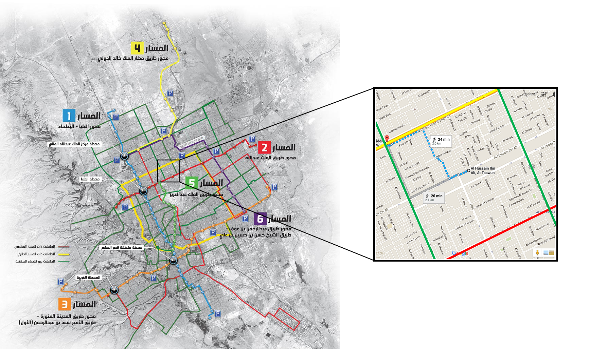

Riyadh's building an extensive public transport system, and several considerations critical for its success:
While the planned subway and bus routes cover major corridors, it can still take up to 25 minutes to walk to the nearest stop/station.
So, without a good first- and last-mile solution, public transportation will face challenge in adoption.
Accessibility to public transport stops and stations is especially crucial for Riyadh, given the hot climate, insufficient infrastructure for walking and biking, and the cultural preference towards driving.
The first- and last-miles will likely have to be solved wzith a motorized solution. Hence, in addition to on-demand mini-buses proposed by the ADA, taxis will likely play a strong role too.
Trip-sharing can reduce the number of vehicles and mileage driven for first- and last-mile trips, furthering Riyadh's goals of reducing congestion and pollution.